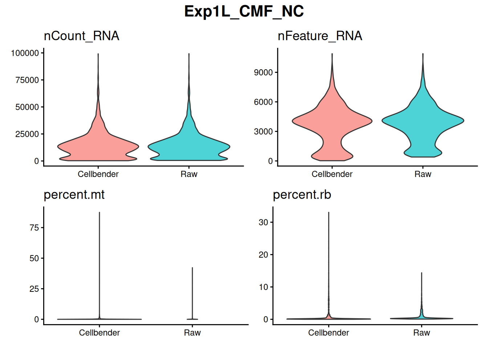
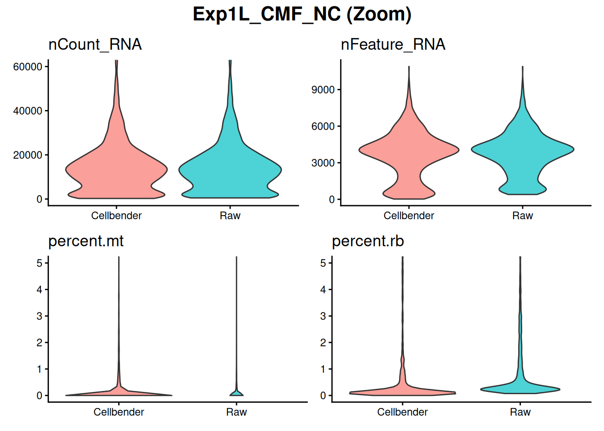
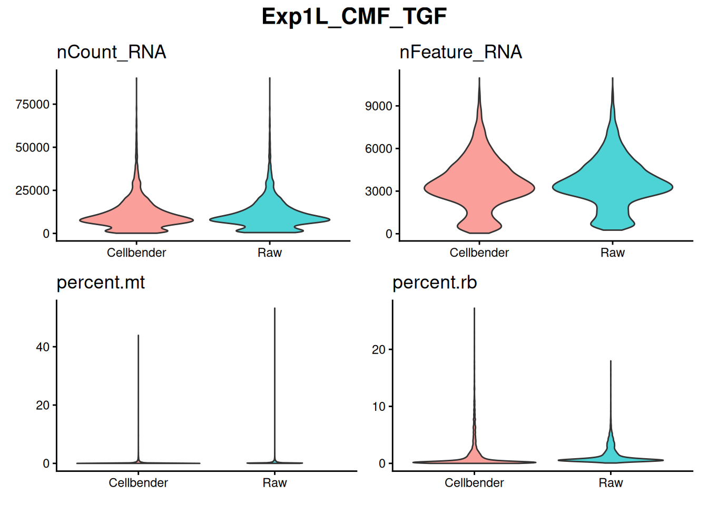
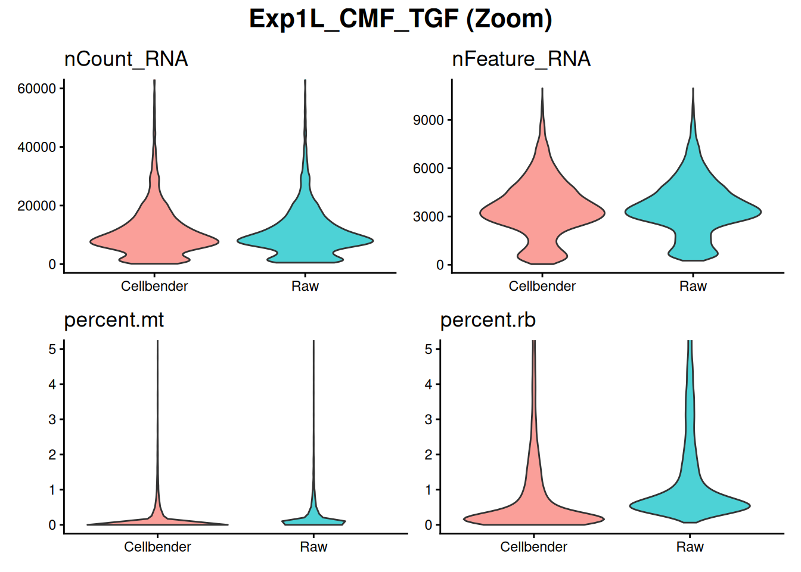
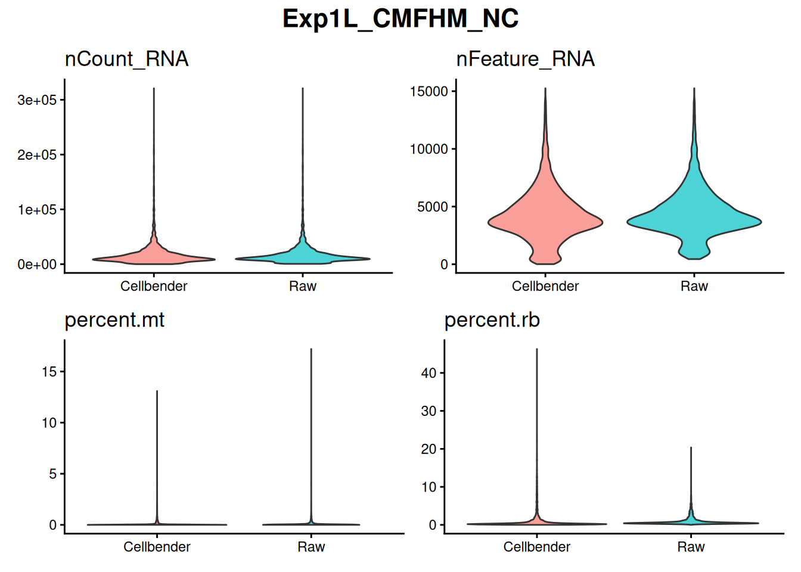
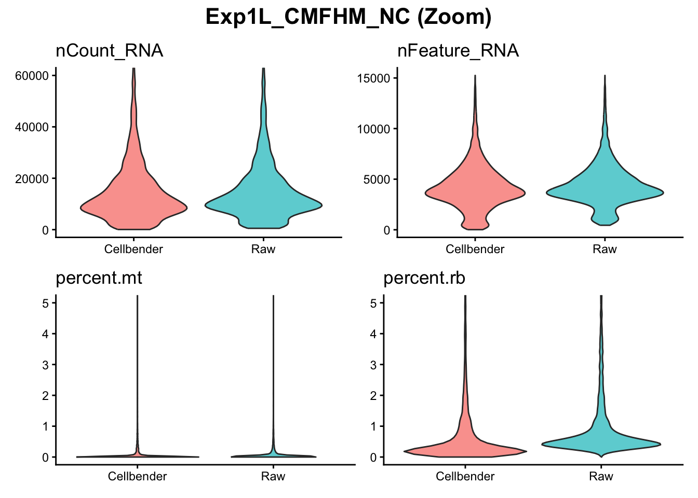
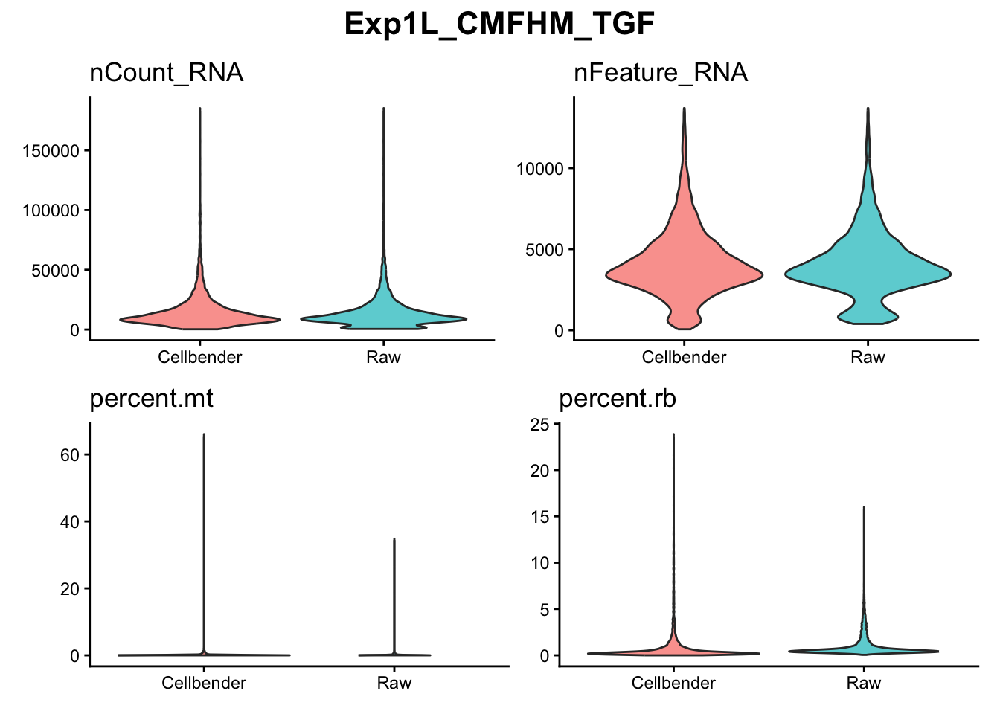
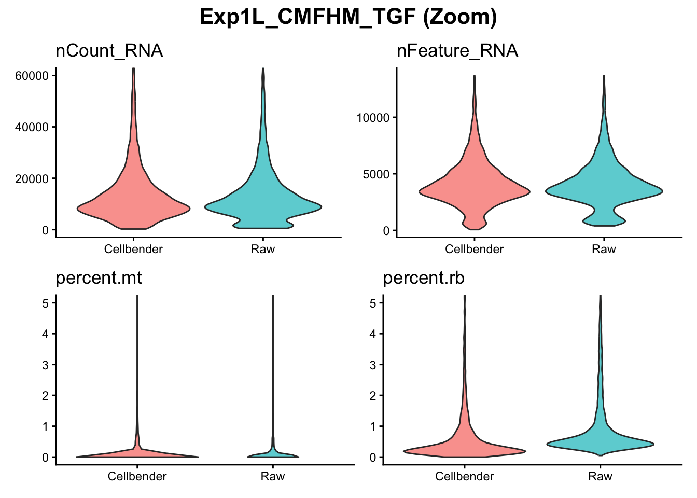
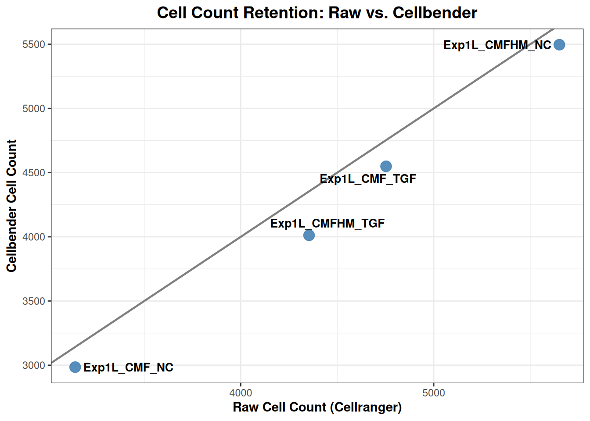

Last updated: 2026-06-30
Checks: 7 0
Knit directory: MT_Project/
This reproducible R Markdown analysis was created with workflowr (version 1.7.2). The Checks tab describes the reproducibility checks that were applied when the results were created. The Past versions tab lists the development history.
Great! Since the R Markdown file has been committed to the Git repository, you know the exact version of the code that produced these results.
Great job! The global environment was empty. Objects defined in the global environment can affect the analysis in your R Markdown file in unknown ways. For reproduciblity it’s best to always run the code in an empty environment.
The command set.seed(20260612) was run prior to running
the code in the R Markdown file. Setting a seed ensures that any results
that rely on randomness, e.g. subsampling or permutations, are
reproducible.
Great job! Recording the operating system, R version, and package versions is critical for reproducibility.
Nice! There were no cached chunks for this analysis, so you can be confident that you successfully produced the results during this run.
Great job! Using relative paths to the files within your workflowr project makes it easier to run your code on other machines.
Great! You are using Git for version control. Tracking code development and connecting the code version to the results is critical for reproducibility.
The results in this page were generated with repository version b844b3a. See the Past versions tab to see a history of the changes made to the R Markdown and HTML files.
Note that you need to be careful to ensure that all relevant files for
the analysis have been committed to Git prior to generating the results
(you can use wflow_publish or
wflow_git_commit). workflowr only checks the R Markdown
file, but you know if there are other scripts or data files that it
depends on. Below is the status of the Git repository when the results
were generated:
Ignored files:
Ignored: .DS_Store
Ignored: .Rproj.user/
Note that any generated files, e.g. HTML, png, CSS, etc., are not included in this status report because it is ok for generated content to have uncommitted changes.
These are the previous versions of the repository in which changes were
made to the R Markdown (analysis/Checking_Cellbender.Rmd)
and HTML (docs/Checking_Cellbender.html) files. If you’ve
configured a remote Git repository (see ?wflow_git_remote),
click on the hyperlinks in the table below to view the files as they
were in that past version.
| File | Version | Author | Date | Message |
|---|---|---|---|---|
| Rmd | b844b3a | Sophie.Alice | 2026-06-30 | adding CM subtype identification |
| html | fe25503 | Sophie.Alice | 2026-06-26 | Build site. |
| Rmd | bccae0a | Sophie.Alice | 2026-06-26 | Adding more |
| html | f44fffe | Sophie.Alice | 2026-06-24 | Build site. |
| Rmd | 3378d5c | Sophie.Alice | 2026-06-24 | Tryinging |
| html | 4803cc4 | Sophie | 2026-06-17 | Build site. |
| Rmd | 0dbaf11 | Sophie | 2026-06-17 | Adding QC |
| html | 7cf7cb9 | Sophie | 2026-06-12 | Build site. |
| Rmd | c467838 | Sophie | 2026-06-12 | Adding Cellbender QC |
rm(list=ls())
gc() used (Mb) gc trigger (Mb) limit (Mb) max used (Mb)
Ncells 907125 48.5 1750912 93.6 NA 1321095 70.6
Vcells 1596264 12.2 8388608 64.0 16384 2392630 18.3library(readr)
library(dplyr)
library(ggplot2)
library(Seurat)
library(hdf5r)
library(scCustomize)
library(patchwork)
library(cowplot)
library(ggrepel)
library(workflowr)First we want to double check whether Cellbender was performed correctly.
Cellbender.master <- "/Users/sophiewagner/Desktop/USZ 25:26/Gabi_Project_Setup/Laila_MT_Project/Laila_MT_Project/Cellbender_Output"
benderfiles <- list.files(
path = Cellbender.master,
pattern = "cellbender_output.*\\.h5",
full.names = TRUE,
recursive = TRUE
)
Raw.master <- "/Users/sophiewagner/Desktop/USZ 25:26/Gabi_Project_Setup/Laila_MT_Project/Laila_MT_Project/Raw_Output"
rawfiles <- list.files(
path = Raw.master,
pattern = "sample.*\\.h5",
full.names = TRUE,
recursive = TRUE
)process_single_cell_pair <- function(b_file, r_file, s_name) {
# bender object
counts_b <- Read_CellBender_h5_Mat(b_file)
obj_b <- CreateSeuratObject(counts = counts_b, project = paste0(s_name, "_Bender"))
obj_b[["percent.mt"]] <- PercentageFeatureSet(obj_b, pattern = "^MT-")
obj_b[["percent.rb"]] <- PercentageFeatureSet(obj_b, pattern = "^RP[SL]")
meta_b <- obj_b@meta.data
meta_b$Method <- "Cellbender"
meta_b$Sample <- s_name
# raw object
counts_r <- Read10X_h5(r_file)
obj_r <- CreateSeuratObject(counts = counts_r, project = paste0(s_name, "_raw"))
obj_r[["percent.mt"]] <- PercentageFeatureSet(obj_r, pattern = "^MT-")
obj_r[["percent.rb"]] <- PercentageFeatureSet(obj_r, pattern = "^RP[SL]")
meta_r <- obj_r@meta.data
meta_r$Method <- "Raw"
meta_r$Sample <- s_name
columns_to_keep <- c("nCount_RNA", "nFeature_RNA", "percent.mt", "percent.rb", "Method", "Sample")
combined_metadata <- rbind(meta_b[, columns_to_keep], meta_r[, columns_to_keep])
results <- list(
bender_obj = obj_b,
raw_obj = obj_r,
metadata = combined_metadata
)
return(results)
}
##############################################
generate_qc_plots <- function(df, s_name) {
# 1. Filter data for the specific sample
sample_df <- df[df$Sample == s_name, ]
# Plot
p1 <- ggplot(sample_df, aes(x = Method, y = nCount_RNA, fill = Method)) +
geom_violin(alpha = 0.7) +
theme_classic() +
labs(title = "nCount_RNA", x = NULL, y = NULL) +
theme(legend.position = "none")
p2 <- ggplot(sample_df, aes(x = Method, y = nFeature_RNA, fill = Method)) +
geom_violin(alpha = 0.7) +
theme_classic() +
labs(title = "nFeature_RNA", x = NULL, y = NULL) +
theme(legend.position = "none")
p3 <- ggplot(sample_df, aes(x = Method, y = percent.mt, fill = Method)) +
geom_violin(alpha = 0.7) +
theme_classic() +
labs(title = "percent.mt", x = NULL, y = NULL) +
theme(legend.position = "none")
p4 <- ggplot(sample_df, aes(x = Method, y = percent.rb, fill = Method)) +
geom_violin(alpha = 0.7) +
theme_classic() +
labs(title = "percent.rb", x = NULL, y = NULL) +
theme(legend.position = "none")
# patchwork
sample_grid <- (p1 + p2) / (p3 + p4) +
plot_annotation(
title = s_name,
theme = theme(plot.title = element_text(size = 16, face = "bold", hjust = 0.5))
)
# Zoomed grid
p1_zoom <- p1 + coord_cartesian(ylim = c(0, 60000))
p3_zoom <- p3 + coord_cartesian(ylim = c(0, 5))
p4_zoom <- p4 + coord_cartesian(ylim = c(0, 5))
sample_grid_zoom <- (p1_zoom + p2) / (p3_zoom + p4_zoom) +
plot_annotation(
title = paste0(s_name, " (Zoom)"),
theme = theme(plot.title = element_text(size = 16, face = "bold", hjust = 0.5))
)
print(sample_grid)
print(sample_grid_zoom)
}seurat_bender_list <- list()
seurat_raw_list <- list()
metadata_qc_list <- list()
sample_names <- gsub("cellbender_output_|_filtered\\.h5", "", basename(benderfiles))
all_metadata_list <- list()
for (i in seq_along(benderfiles)) {
s_name <- sample_names[i]
b_file <- benderfiles[i]
# Find the exact matching raw file
r_file <- rawfiles[grep(s_name, basename(rawfiles))][1]
# Safety check to prevent crashing on missing files
if (is.na(r_file) || length(r_file) == 0) {
warning(paste("Skipping: No raw file found for", s_name))
next
}
# Process pair
res <- process_single_cell_pair(b_file = b_file, r_file = r_file, s_name = s_name)
df <- res$metadata
all_metadata_list[[s_name]] <- df
#
generate_qc_plots(df = df, s_name = s_name)
rm(res, df)
gc()
}







## Combine Metadata into a Masterfile
master_compare_df <- do.call(rbind, all_metadata_list)
table(master_compare_df$Sample)
Exp1L_CMF_NC Exp1L_CMF_TGF Exp1L_CMFHM_NC Exp1L_CMFHM_TGF
6127 9302 11147 8366 counts_matrix <- table(master_compare_df$Sample, master_compare_df$Method)
counts_wide <- as.data.frame.matrix(counts_matrix)
counts_wide$Sample <- rownames(counts_wide)
ggplot(counts_wide, aes(x = Raw, y = Cellbender)) +
geom_abline(intercept = 0, slope = 1, color = "grey50", size = 0.8) +
geom_point(color = "#4682B4", size = 4, alpha = 0.9) +
# Labels
geom_text_repel(aes(label = Sample), size = 3.5, fontface = "bold", box.padding = 0.4) +
# Layout styling
theme_bw() +
labs(
title = "Cell Count Retention: Raw vs. Cellbender",
x = "Raw Cell Count (Cellranger)",
y = "Cellbender Cell Count"
) +
theme(
plot.title = element_text(face = "bold", size = 14, hjust = 0.5),
plot.subtitle = element_text(size = 10, color = "grey30", hjust = 0.5),
axis.title = element_text(face = "bold", size = 11)
)Warning: Using `size` aesthetic for lines was deprecated in ggplot2 3.4.0.
ℹ Please use `linewidth` instead.
This warning is displayed once per session.
Call `lifecycle::last_lifecycle_warnings()` to see where this warning was
generated.
The h5 files seem good. Not corrupted and Cellbender worked.
sessionInfo()R version 4.6.0 (2026-04-24)
Platform: aarch64-apple-darwin23
Running under: macOS Sequoia 15.7.7
Matrix products: default
BLAS: /Library/Frameworks/R.framework/Versions/4.6/Resources/lib/libRblas.0.dylib
LAPACK: /Library/Frameworks/R.framework/Versions/4.6/Resources/lib/libRlapack.dylib; LAPACK version 3.12.1
locale:
[1] en_US.UTF-8/en_US.UTF-8/en_US.UTF-8/C/en_US.UTF-8/en_US.UTF-8
time zone: Europe/Zurich
tzcode source: internal
attached base packages:
[1] stats graphics grDevices utils datasets methods base
other attached packages:
[1] ggrepel_0.9.8 cowplot_1.2.0 patchwork_1.3.2 scCustomize_3.3.0
[5] hdf5r_1.3.12 Seurat_5.5.0 SeuratObject_5.4.0 sp_2.2-1
[9] ggplot2_4.0.3 dplyr_1.2.1 readr_2.2.0 workflowr_1.7.2
loaded via a namespace (and not attached):
[1] RColorBrewer_1.1-3 shape_1.4.6.1 rstudioapi_0.19.0
[4] jsonlite_2.0.0 magrittr_2.0.5 ggbeeswarm_0.7.3
[7] spatstat.utils_3.2-3 farver_2.1.2 rmarkdown_2.31
[10] GlobalOptions_0.1.4 fs_2.1.0 vctrs_0.7.3
[13] ROCR_1.0-12 spatstat.explore_3.8-1 paletteer_1.7.0
[16] janitor_2.2.1 forcats_1.0.1 htmltools_0.5.9
[19] sass_0.4.10 sctransform_0.4.3 parallelly_1.47.0
[22] KernSmooth_2.23-26 bslib_0.11.0 htmlwidgets_1.6.4
[25] ica_1.0-3 plyr_1.8.9 lubridate_1.9.5
[28] plotly_4.12.0 zoo_1.8-15 cachem_1.1.0
[31] whisker_0.4.1 igraph_2.3.2 mime_0.13
[34] lifecycle_1.0.5 pkgconfig_2.0.3 Matrix_1.7-5
[37] R6_2.6.1 fastmap_1.2.0 snakecase_0.11.1
[40] fitdistrplus_1.2-6 future_1.70.0 shiny_1.14.0
[43] digest_0.6.39 colorspace_2.1-2 rematch2_2.1.2
[46] rprojroot_2.1.1 tensor_1.5.1 RSpectra_0.16-2
[49] irlba_2.3.7 labeling_0.4.3 progressr_0.19.0
[52] timechange_0.4.0 spatstat.sparse_3.2-0 httr_1.4.8
[55] polyclip_1.10-7 abind_1.4-8 compiler_4.6.0
[58] bit64_4.8.2 withr_3.0.3 S7_0.2.2
[61] fastDummies_1.7.6 MASS_7.3-65 tools_4.6.0
[64] vipor_0.4.7 lmtest_0.9-40 otel_0.2.0
[67] beeswarm_0.4.0 httpuv_1.6.17 future.apply_1.20.2
[70] goftest_1.2-3 glue_1.8.1 callr_3.8.0
[73] nlme_3.1-169 promises_1.5.0 grid_4.6.0
[76] Rtsne_0.17 getPass_0.2-4 cluster_2.1.8.2
[79] reshape2_1.4.5 generics_0.1.4 gtable_0.3.6
[82] spatstat.data_3.1-9 tzdb_0.5.0 tidyr_1.3.2
[85] data.table_1.18.4 hms_1.1.4 spatstat.geom_3.8-1
[88] RcppAnnoy_0.0.23 RANN_2.6.2 pillar_1.11.1
[91] stringr_1.6.0 ggprism_1.0.7 spam_2.11-4
[94] RcppHNSW_0.7.0 later_1.4.8 circlize_0.4.18
[97] splines_4.6.0 lattice_0.22-9 bit_4.6.0
[100] survival_3.8-6 deldir_2.0-4 tidyselect_1.2.1
[103] miniUI_0.1.2 pbapply_1.7-4 knitr_1.51
[106] git2r_0.36.2 gridExtra_2.3.1 scattermore_1.2
[109] xfun_0.59 matrixStats_1.5.0 stringi_1.8.7
[112] lazyeval_0.2.3 yaml_2.3.12 evaluate_1.0.5
[115] codetools_0.2-20 tibble_3.3.1 cli_3.6.6
[118] uwot_0.2.4 xtable_1.8-8 reticulate_1.46.0
[121] processx_3.9.0 jquerylib_0.1.4 Rcpp_1.1.1-1.1
[124] mcprogress_0.1.1 globals_0.19.1 spatstat.random_3.5-0
[127] png_0.1-9 ggrastr_1.0.2 spatstat.univar_3.2-0
[130] parallel_4.6.0 dotCall64_1.2 listenv_1.0.0
[133] viridisLite_0.4.3 scales_1.4.0 ggridges_0.5.7
[136] purrr_1.2.2 rlang_1.2.0